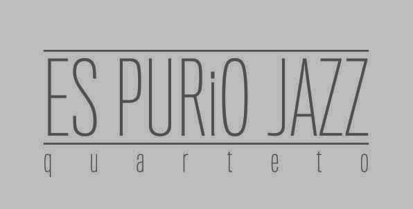
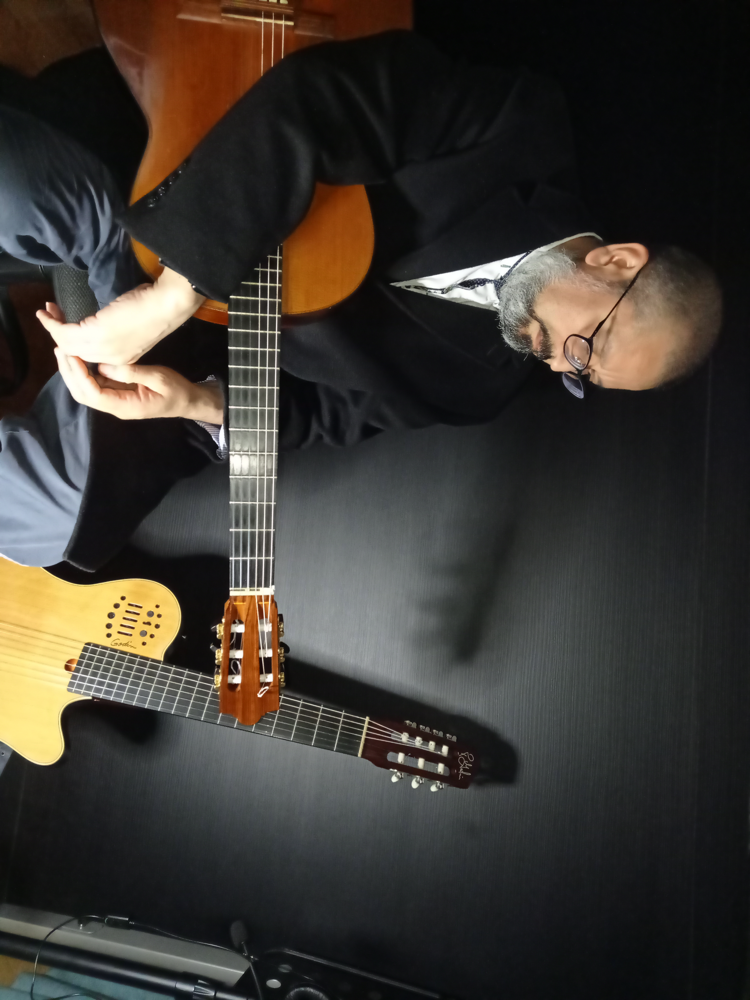
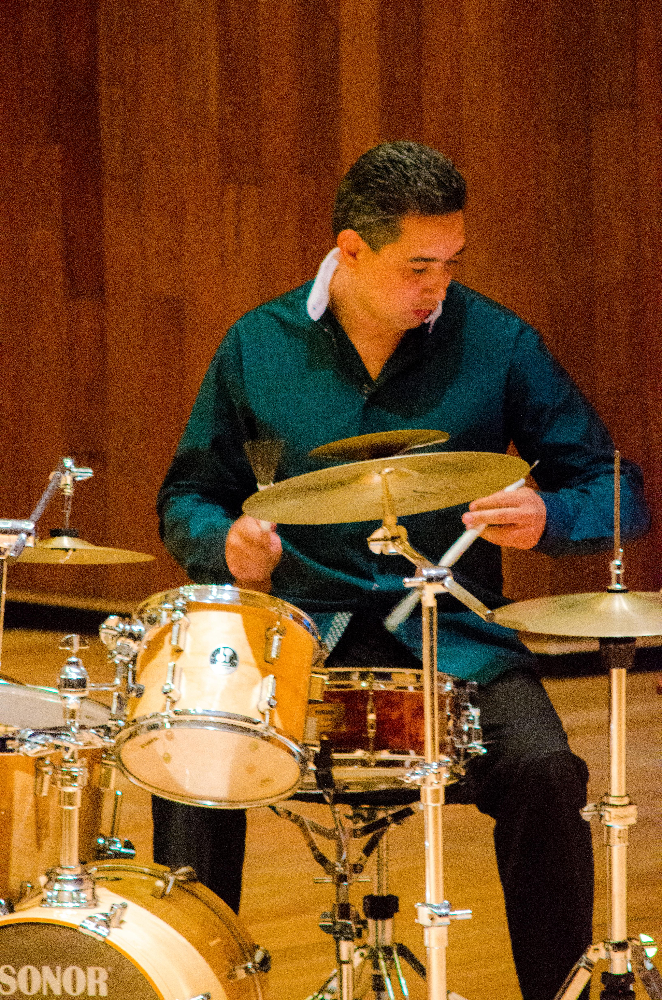
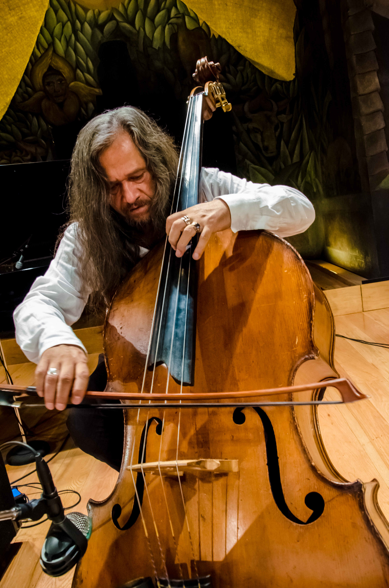

Esta agrupación musical está conformada por los músicos mexicanos Mireya González al piano, Óscar Cárdenas en la guitarra, Bogdan Chávez en la batería y Víctor Flores en el contrabajo. Todos ellos con una gran trayectoria como músicos profesionales.
ES PURiO JAZZ quarteto toma el nombre de la aparente dicotomía existente entre las expresiones artísticas de la música de concierto y el jazz así como entre los músicos que las producen. Este juego de palabras que forma el nombre de la agrupación, cobra sentido al hacer alusión a la manera de combinar los elementos de la música de concierto y del jazz en un todo orgánico.
Hay numerosos ejemplos que constatan que cada vez están más cercanas ambas particulares maneras de organizar a los sonidos de estos géneros, como la primera obra seleccionada para el repertorio de ES PURiO JAZZ quarteto, el Concerto for Classical Guitar and Piano Jazz, del compositor francés Claude Bolling.
ES PURiO JAZZ quarteto ha ofrecido conciertos en diversas salas de la Ciudad de México, tales como la Sala Chopin, la sala Hermilio Novelo del Conjunto Cultural Ollin Yoliztli, en el Teatro Ángela Peralta de San Miguel de Allende, Gto., en la Mina Prehispánica de Taxco, Gro., y para la grabación de un video, en la sala Nezahualcóyotl del Centro Cultural Universitario y en el Lunario.
Tiene esta agrupación dos producciones discográficas. La primera "ES PURiO JAZZ", contiene la obra mencionada de Claude Bolling y la segunda "Teine", con una selección de obras del género del jazz además de tres obras originales, que ya se puede adquirir en tiendas y conciertos.

Es compositor y guitarrista mexicano, titulado de la ahora Facultad de Música de la UNAM. Es creador de música de cámara que incluye a la guitarra como solista o como parte de alguna agrupación, además de otros instrumentos, como el cuarteto de saxofones, piano, orquesta y la dotación instrumental de ES PURiO JAZZ quarteto.
Como guitarrista tiene premios nacionales, como el primer lugar en el XIX Concurso Nacional de Guitarra en Paracho, Mich., con una mención otorgada por el compositor mexicano Julio César Oliva a la mejor interpretación de su obra.
Se ha presentado en las salas más importantes de la Ciudad de México así como del interior de la república, además de las Ciudades de Belice y Belmopán.
Ha tomado clases magistrales con Iván Rijos, Alirio Díaz, Leo Brouwer, Franz Bungarten, Guillermo González, Julio César Oliva, por mencionar algunos. Tiene dos producciones discográficas independientes, "Óscar Cárdenas en Concierto" que incluye algunas obras de su autoría y obras del repertorio de la guitarra clásica y "Frente al Espejo" con obras exclusivamente de su autoría.
Desde pequeña, Mireya manifestó un talento natural para la música, motivada por un ambiente musical familiar, que la llevó a decidir muy pronto sus objetivos de vida: estudiar música.
Con una voluntad férrea y con un objetivo claro, avanzó en sus estudios rápidamente, desarrollando sensibilidad y técnica orientadas por sus primeros profesores Eduardo Caballero y Saúl Rocha, iniciando con órgano melódico y especializándose en piano.
Al ingresar a la ahora Facultad de Música de la UNAM, encontró la dirección, la motivación y el apoyo de la Maestra Ma. Pilar Vidal Álvarez, quien influyó de manera determinante en su formación profesional, hasta obtener el grado de licenciada en piano.
Se ha presentado en conciertos como solista en salas como Ollin Yoliztli, Carlos Chávez, Sala Xochipilli, Sala Huehuecóyotl, entre otras y con distintas agrupaciones, en diversos foros.

Baterista y productor mexicano, comenzó su carrera musical a temprana edad. Cursó sus primeros estudios musicales en la Escuela de Iniciación del INBA, posteriormente tomó clases con el profesor Jorge González y fue alumno del Taller de Jazz, impartido en el Escuela Superior de Música.
Continuó su formación con miras a perfeccionar su técnica, bajo la tutela de diversos bateristas, tales como Horacio "el negro" Hernández y Ruy López Nussa, a quien conoció en una gira en la Ciudad de la Habana, Cuba.
Como músico profesional se ha mantenido fuertemente activo, participando en distintos proyectos de música popular, ofreciendo giras nacionales e internacionales, así como múltiples obras teatrales. Ha grabado música para películas, jingles y más de 30 discos, además de dar clases particulares y en la Escuela Sala Chopin desde 2005.
Incursionó en la producción musical con su estudio de grabación BOGDRUM, que ya cuenta con un catálogo considerable, incluyendo el disco de ES PURiO JAZZ quarteto, agrupación de la cual es fundador desde 2010.

Contrabajista mexicano, realizó estudios en la ahora Facultad de Música de la UNAM y en la Escuela de Perfeccionamiento Vida y Movimiento del Conjunto Cultural Ollin Yoliztli. Ha participado en cursos y clases magistrales impartidas por maestros como: Eugene Levinson, John Shaeffer, Mijail Stadiniscki, Lucy van Dale, entre otros.
En 1992 gana como solista, la medalla Cynthia Woods dentro del Texas Music Festival. La embajada de Austria, en conjunto con la Academia Medalla Mozart A. C., le otorgan la Medalla Mozart en 2009.
Ha ganado por concurso los puestos de contrabajista principal en la Orquesta de Cámara de Bellas Artes y en la Orquesta Filarmónica de la UNAM, de coprincipal en la Orquesta Filarmónica de la Ciudad de México, además de ser invitado como principal en la orquesta Sinfónica de Minería y de la Orquesta del Festival Mozart-Haydn.
Ha sido invitado como solista en la Orquestas más prestigiadas del país. Víctor Flores es considerado como uno de los contrabajistas mexicanos más importantes de Latinoamérica por interpretar desde música Renacentista hasta música nueva y presentarse exitosamente en los principales foros y festivales de México y del extranjero.